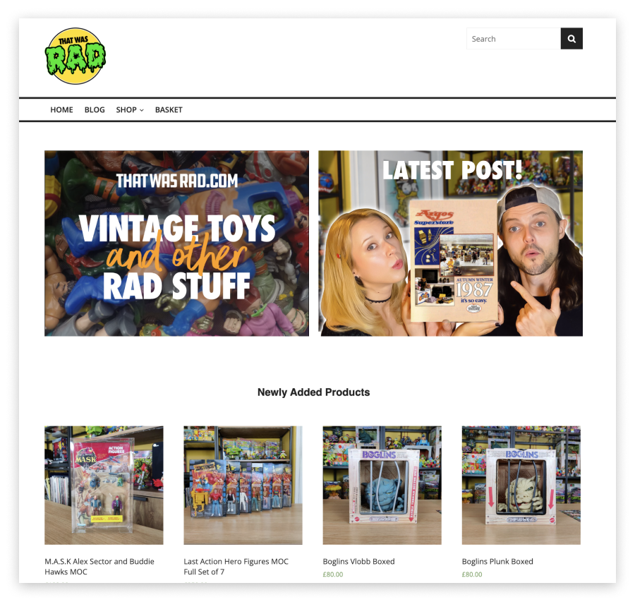
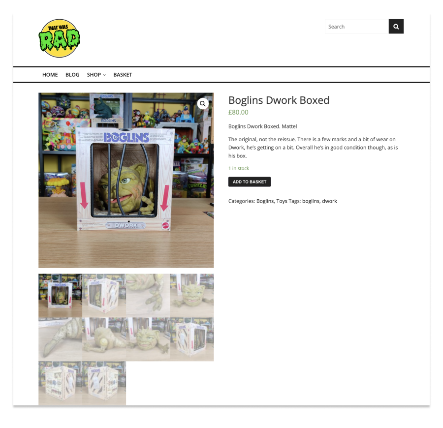

That Was Rad
UX/UI | Branding | Web Design | Responsive | Development | E-commerce | Wordpress | HTML5 | CSS3 | PHP
thatwasrad.com is a UK based independent seller of Vintage Toys and games from the 70's 80's 90's and beyond. It grew out of a hobby of collecting awesome stuff from when we were kids fuelled by nostalgia, cartoons, video games and refusal to grow up.
Built using Wordpress and the Woocommerce plug-in.
We also dabble in a bit of Youtube

